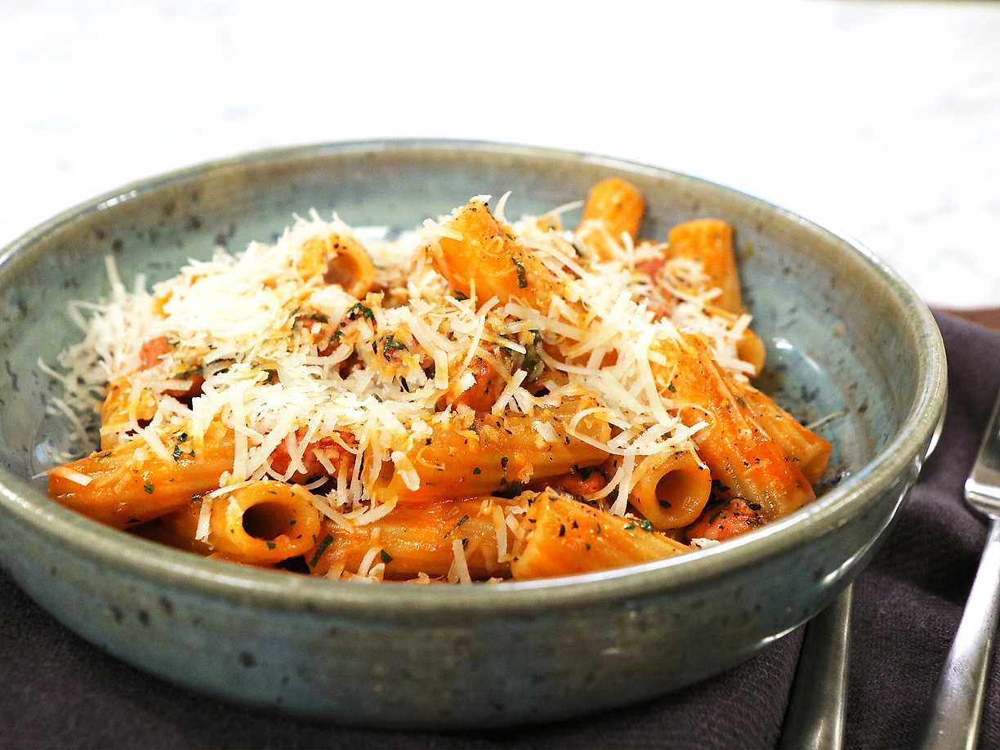

Salsiccia Pasta

Description
A simple and totally delicious pasta. This one will impress all of your
friends, or dates :)
4 portions
Ingredients:
- 400 grams Salsiccia Sausage
-
500 grams Pasta, i would suggest Rigatoni or
Mezze Maniche Rigate
- Tomato purée
- 2 cloves garlic
- One Shallot
-
Cooking wine, red or white, beer also works, depending on your tastes
- 2 dl of cream
- Parmesan cheese
- Olive Oil
- Salt
- Pepper
- Oregano
- Rosemary
- (Optional) Chili flakes
Steps:
-
Start boiling salted water, follow the instructions on your chosen pasta
for the right amount water and salt.
-
Break the salsiccia up and fry it on medium heat with olive oil until
the fat is rendered and the meat starts to become slightly crisped up.
-
Once the salsiccia is approaching doneness, add the minced garlic and
chopped shallots, as well as the tomato purée.
-
Once the purée has started sticking to the pan add some of your chosen
wine or beer to deglaze. Add in cream and all herbs and spices except
salt to taste.
-
Let the ingredients in the pan simmer until the pasta is ready, reserve some pasta water and strain the pasta.
-
Add the pasta to the pan and stir in pasta water gradually until you reach your desired consistency, in general, the more pasta water you add in the more the sauce will thicken.
- Salt to taste and serve immediately, grate parmesan on top.